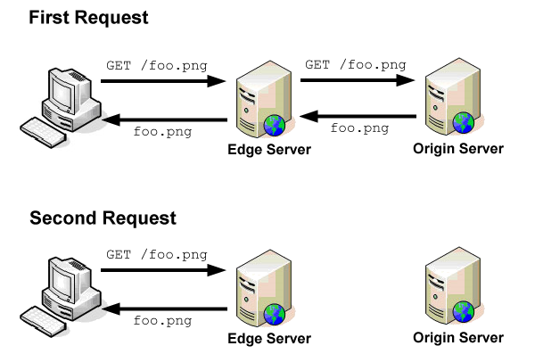

There are many components in CDNs which make up the architecture for the CDN. These components are introduced with the sole purpose of minimising Round-Trip Time, or RTT, 'which is the number of milliseconds it takes for a browser to send a request and receive a response back from a server.' Round-Trip Time is dependent on many factors, the most interesting one being the physical distance between the user and the server.
(1)
This relates to the topology discussion within CDN techonology, which is a major architectural question when developing a CDN service.
In order to minimise the Round-Trip Time, every CDN at least has these components in place:
This is simply the server which originally contained the information the user is trying to access. The information from here is replicated into the CDN's surrogate/edge cache servers.(2) The image below demonstrates how the process works.(3)

When the first request for the file foo.png is sent, the request is first sent through the surrogate server. However, the surrogate server currently does not contain the file foo.png, so the request is pushed to the origin server. The file foo.png is retrieved and sent back to the user, storing the data for the file in the surrogate server in the process. Due to the caching that occurs, the second and subsequent requests for the same file will stop and retrieve the cached image from the surrogate server.
A request routing mechanism is used to direct the user's request to a surrogate server, or a set of surrogate servers, to provide that content.(4) For more information on Request Routing, click here